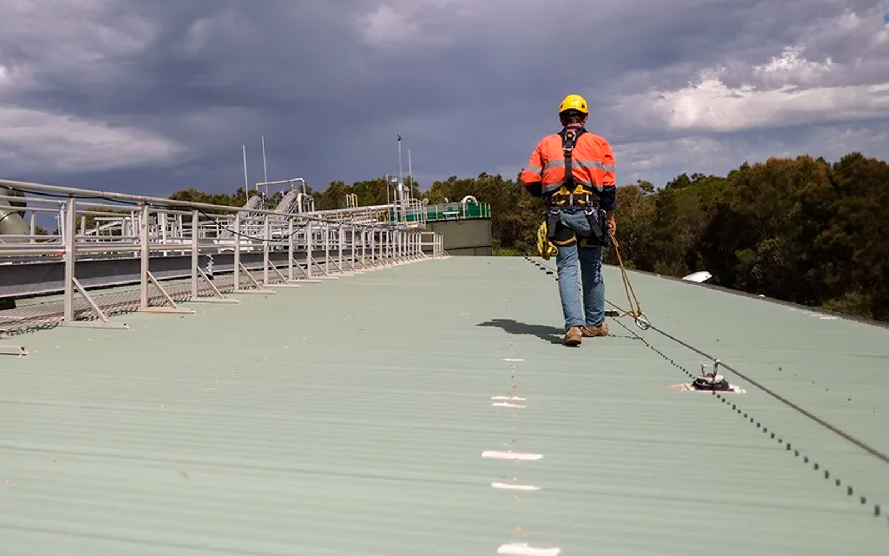
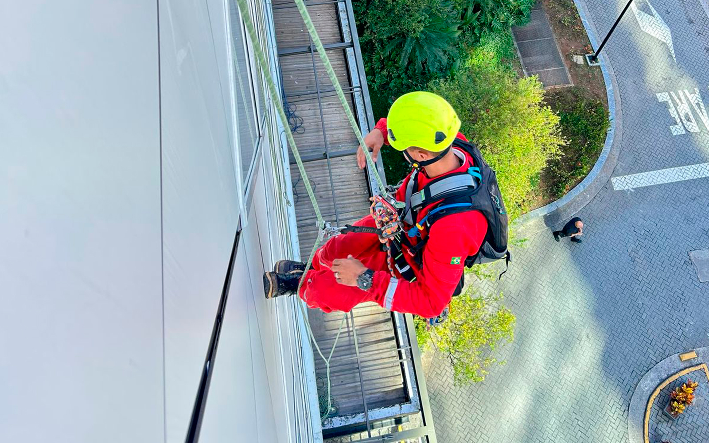

A Evolution Alpinismo Industrial oferece soluções de revestimentos protetivos que maximizam a durabilidade e valorizam suas estruturas, protegendo-as contra intempéries, corrosão e desgaste natural.
Segurança e conformidade para trabalhos em altura em seu empreendimento.

A instalação de linhas de vida é um requisito fundamental para garantir a segurança de trabalhadores que realizam atividades em altura, conforme a NR-35. Em São Paulo, a Evolution Alpinismo Industrial é especialista em projetar e instalar sistemas de linha de vida seguros e certificados, utilizando o alpinismo industrial para acessar locais complexos com eficiência e precisão.
Seja para telhados, fachadas, estruturas metálicas ou industriais, nossas soluções são personalizadas para cada necessidade, garantindo que os trabalhadores estejam sempre protegidos contra quedas. Nossos profissionais são altamente qualificados e seguem rigorosos padrões de segurança, desde a análise de risco até a certificação final do sistema.
Todos os nossos projetos e instalações atendem às exigências da Norma Regulamentadora 35, garantindo a segurança legal e operacional.
Utilizamos materiais e equipamentos de alta qualidade, com certificação e rastreabilidade, para máxima confiabilidade.
O alpinismo industrial permite a fixação de pontos de ancoragem e linhas de vida em locais estratégicos, garantindo a eficácia do sistema.
Profissionais treinados e certificados para instalar e inspecionar sistemas de linha de vida com segurança e expertise.
Investir na instalação de linhas de vida em São Paulo com a Evolution é garantir a segurança dos seus colaboradores e a conformidade da sua empresa com as normas de trabalho em altura. Além da instalação, oferecemos serviços de inspeção e manutenção periódica para assegurar a funcionalidade contínua do sistema.

Nossa metodologia de trabalho oferece vantagens únicas:
Soluções seguras e inovadoras para serviços em altura.
Entre em ContatoRespostas para as perguntas mais comuns sobre nosso serviço de instalação de linhas de vida em São Paulo.